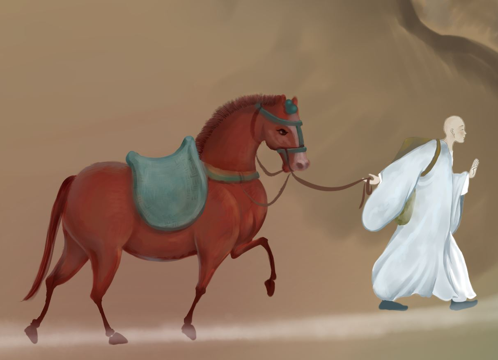

玄奘（602年~664年），唐代著名高僧，法相宗创始人，洛州缑氏（今河南洛阳偃师）人，其先颍川人，俗家姓名“陈祎（yī）”，法名“玄奘”，被尊称为“三藏法师”，后世俗称“唐僧”，与鸠摩罗什、真谛并称为中国佛教三大翻译家。
玄奘的译典著作有《大般若经》《心经》《解深密经》《瑜伽师地论》《成唯识论》等。《大唐西域记》十二卷，记述他西游亲身经历的110个国家及传闻的28个国家的山川、地邑、物产、习俗等。
在中国译经史上，玄奘结束了一个旧时代，开辟了一个新时代。从东汉至魏晋南北朝时期，中外翻译家对于译经各有贡献，但从总体上说，玄奘的成就都在他们之上。印度佛学从弥勒、无著、世亲，次第相承，直到陈那、护法、戒贤等人，已定为因明、对法、戒律、中观和瑜伽五科。玄奘的翻译工作，在中印文化交流史上，无疑起到了相互了解、相互学习的作用。
